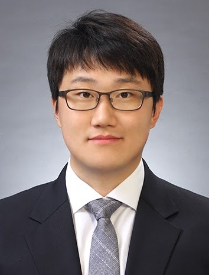
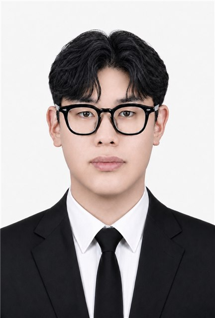
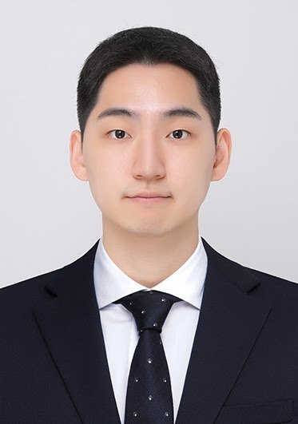
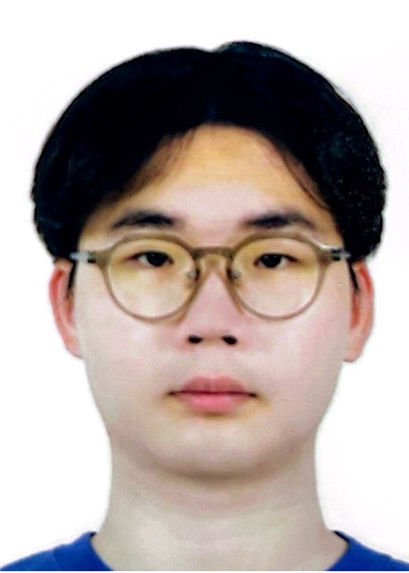
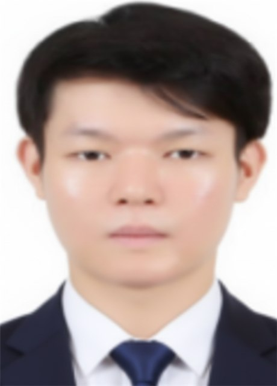
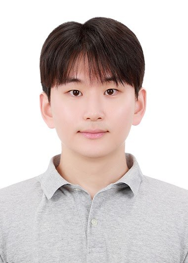
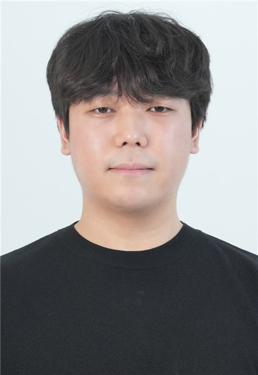
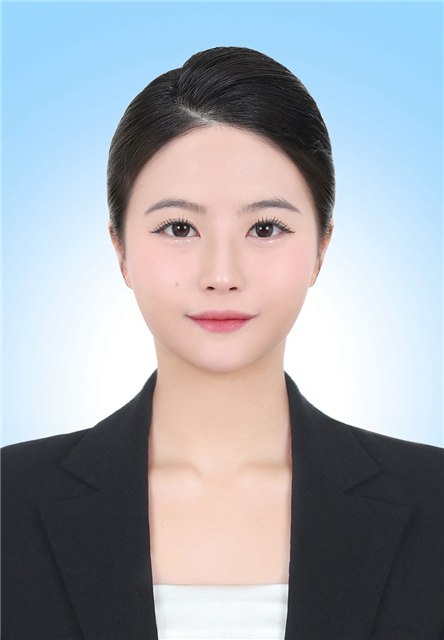

Hyun Min 민현
Induction motor drive system
B.S. in Electrical Engineering, Myongji University
Faculty, students, and alumni of ITEC Lab.

Principal investigator
Associate Professor
Mirae Building, Rm. 512
yshan@kookmin.ac.kr
Induction motor drive system
B.S. in Electrical Engineering, Myongji University

OEW Motor Control for EV
B.S. in Electrical Engineering, Kookmin University

OEW Motor Control for EV
B.S. in Electronics Engineering, Myongji University

OEW Motor Control for EV, Induction motor drive system
B.S. in Electronics Engineering, Myongji University

OEW/SEW Motor Control for EV
B.S. in Electrical Engineering, Kookmin University

SEW Motor Control for EV
B.S. in Electrical Engineering, Kookmin University

Undergraduate student (4th grade) in Electrical Engineering, Kookmin University

Single shunt & Sensorless Motor Control
한국전자기술연구원 (KETI, Korea Electronics Technology Institute)
M.S. in Electrical Engineering, Kookmin University (Aug. 2026)
B.S. in Electrical Engineering, Myongji University